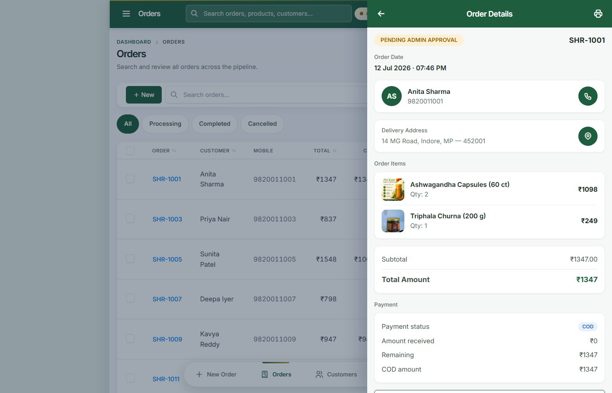
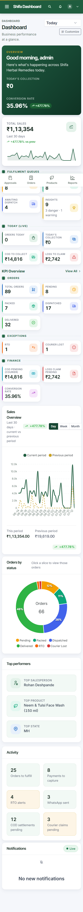
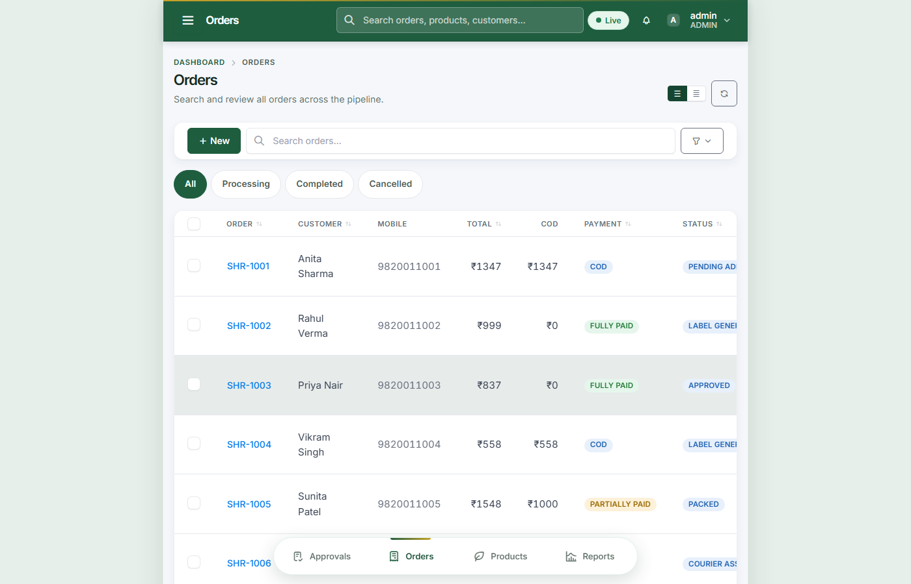
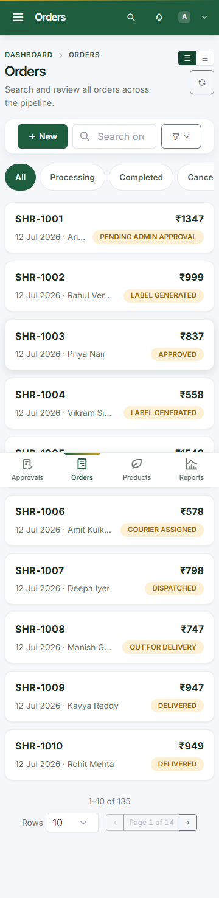

Admin dashboard showing order summary, KPIs, and pending approvals

Order detail showing customer info, line items with thumbnails, payment, status history

Mobile dashboard with stacked KPI cards and hamburger menu

Desktop view with table layout

Mobile view with card layout

Packing queues showing three stages: to pack, awaiting handover, awaiting dispatch